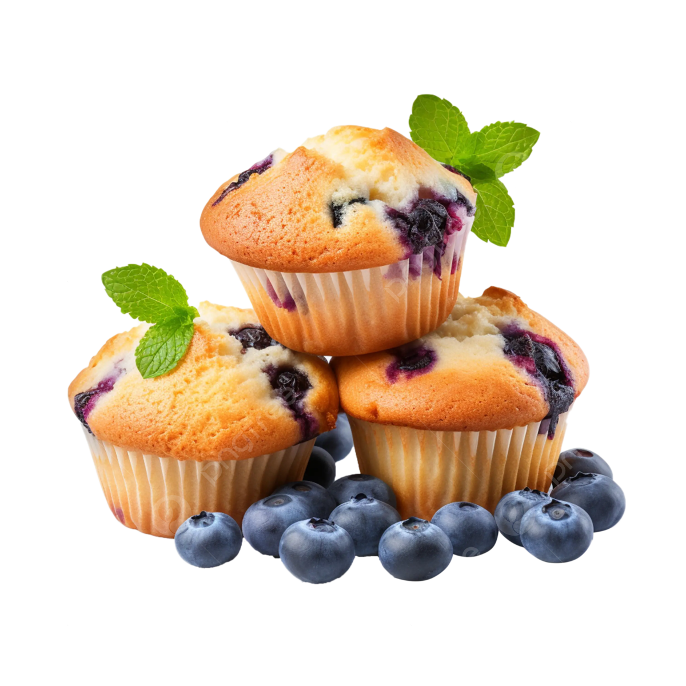

Why Blueberry Muffins?
Blueberry Muffins are extremely good! Blueberry muffins are a delightful treat, bursting with the sweet and slightly tart flavor of juicy blueberries. The moist and tender crumb of the muffin perfectly complements the pops of blueberry goodness, creating a symphony of flavors and textures in every bite. Whether enjoyed warm from the oven or as a midday snack, blueberry muffins are a comforting and satisfying indulgence that can brighten any day.
Ingredients
- 2 cups all-purpose flour
- 1 teaspoon baking powder
- ½ teaspoon baking soda
- ¼ teaspoon salt
- ½ cup (1 stick) unsalted butter, softened
- ¾ cup granulated sugar
- 2 large eggs
- 1 teaspoon vanilla extract
- ½ cup milk
- 1 ½ cups fresh or frozen blueberries
Instructions
- Preheat oven to 190°C. Line a muffin tin with paper liners or grease with butter or cooking spray.
- In a medium bowl, whisk together the flour, baking powder, baking soda, and salt.
- In a large bowl, cream together the butter and sugar until light and fluffy. Beat in the eggs one at a time, then stir in the vanilla extract.
- In a small bowl, combine the milk. Gradually add the dry ingredients to the wet ingredients, alternating with the milk, beginning and ending with the dry ingredients. Mix until just combined. Do not overmix.
- Gently fold in the blueberries.
- Fill each muffin cup about 2/3 full.
- Bake for 18-22 minutes, or until a toothpick inserted into the center comes out clean.
- Let cool in the muffin tin for a few minutes before transferring to a wire rack to cool completely.
Like